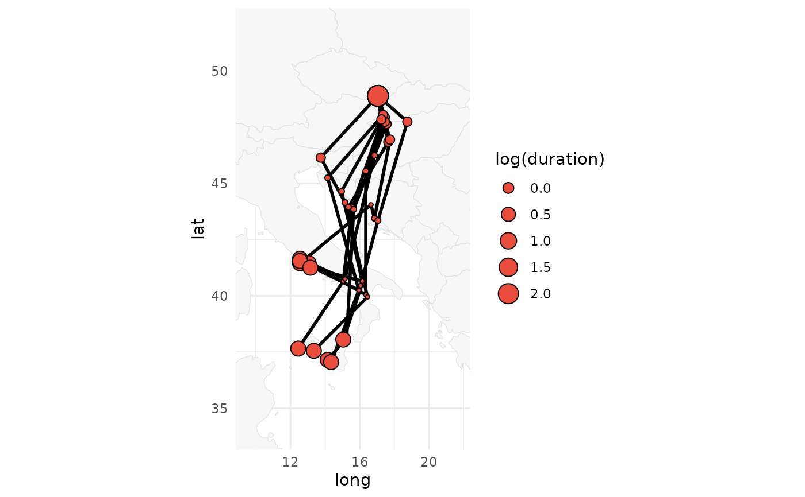

This function randomly simulates multiple trajectories from a graph using the forward filtering backward sampling algorithm. For more details, see section 2.3.3 of Nussbaumer et al. (2023b) and the GeoPressureManual.
Arguments
- graph
a graph object.
- nj
Number of simulations.
- quiet
logical to hide messages about the progress.
Value
Path data.frame containing the columns
-stap_id stationary period
junique ID for each simulation.indindices of the coordinate in the 2D grid. Useful to retrieve map or graph informationlatlatitude,lonlongitudestartdatetime of the start of the stationary period (same as instap)enddatetime of the end of the stationary period (same as instap)includelogical if stationary period was modelled (same as instap)nb_sample knownnumber of datapoint used to compute pressure (same as instap)
References
Nussbaumer, Raphaël, Mathieu Gravey, Martins Briedis, Felix Liechti, and Daniel Sheldon. 2023. Reconstructing bird trajectories from pressure and wind data using a highly optimized hidden Markov model. Methods in Ecology and Evolution, 14, 1118–1129 https://doi.org/10.1111/2041-210X.14082.
See also
Other graph:
graph_create(),
graph_marginal(),
graph_most_likely(),
graph_set_movement(),
print.graph()
Examples
owd <- setwd(system.file("extdata", package = "GeoPressureR"))
tag <- tag_create("18LX", quiet = TRUE) |>
tag_label(quiet = TRUE) |>
twilight_create() |>
twilight_label_read() |>
tag_set_map(
extent = c(-16, 23, 0, 50),
known = data.frame(stap_id = 1, known_lon = 17.05, known_lat = 48.9)
) |>
geopressure_map(quiet = TRUE) |>
geolight_map(quiet = TRUE)
setwd(owd)
# Create graph
graph <- graph_create(tag, quiet = TRUE)
# Define movement model
graph <- graph_set_movement(graph)
# Compute simulations
path_simulation <- graph_simulation(graph, quiet = TRUE)
plot_path(path_simulation, plot_leaflet = FALSE)
